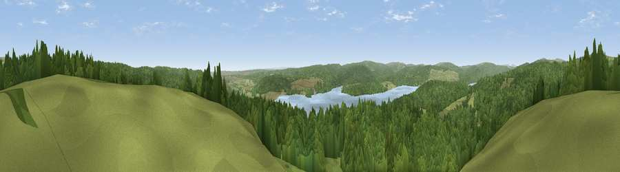

Viewpoint near Falstone
#11182 in England · top 23% of its area beats it · near FalstoneWhere it is
The exact computed spot (NY 69975 89625). Click the marker for map links.
The view, rendered

A 360° render of this exact spot computed from the terrain model, tree cover and land cover — summer colours, afternoon light, calibrated against photographs of famous viewpoints. Real trees, hedges and buildings will differ in detail.
The panorama
Grey silhouette: terrain skyline in each direction (720 bearings, Earth curvature and refraction included). Dashed green: skyline with trees (+15 m) and buildings (+8 m) as obstacles. Blue strip: how far the ground is visible on each bearing.
Where the view opens
Wedge length = distance to the farthest visible ground on that bearing (vegetation-aware). Rings at 10, 25 and 50 km.
What fills the view
83% woodland · 11% grassland · 6% water
Angular shares of the visible panorama (visual magnitude), not map area. Landscape diversity 0.25 (0–1 Shannon).
Key numbers
More beautiful places nearby
The staircase of upgrades: each row has a higher view potential than everything closer. Driving times are estimates from straight-line distance, calibrated against real road routing — check an actual route before setting out.
| Place | Direction | Drive | Score |
|---|---|---|---|
| Earl's Seat | NNE · 3 km | ~7 min | 67.4 |
| Monkside | NNW · 6 km | ~12 min | 78.4 |
| Deadwater Fell | NW · 11 km | ~20 min | 79.4 |
| Viewpoint c11995_7247 | NW · 13 km | ~24 min | 82.1 |
| Viewpoint near Hepple | ENE · 33 km | ~50 min | 82.4 |
| Viewpoint c12273_7856 | NE · 33 km | ~51 min | 83.7 |
| Viewpoint c12396_7887 | NE · 39 km | ~58 min | 85.7 |
| Viewpoint near Kirknewton | NNE · 46 km | ~66 min | 86.1 |
55.19997, -2.47325 · source: screening · position refined by local search. Computed location — check access rights before visiting.